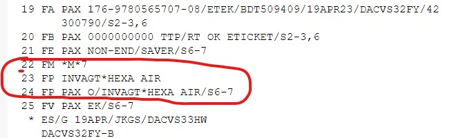

First Reissue within same PNR - Full Reissue
1. Rebook the new itinerary.
2. TQT (To check TST)
3. Check the Fare Difference & Tax Difference of Old Ticket & New Ticket:
4. Check Previous ticket Image >> TWD/TKT157-XXXXXXXXXX
5. Check Previous Tax Image >> TWD/TAX
6. Check reissue charge
7. TTK/EXCH (within the PNR)
8. RFJ;ER > ER > IR (Receive)
9. Delete Previous Fare & Load new fare FXP/S2-5, then receive
10. TQT (Put TQT Graphics mood On)
10. Put difference of fare on “Equivalent Fare” field
11. Put Reissue Charges & Tax difference on “Taxes” field
12. Equivalent Fare & Taxes must be equal to TOTAL
13. Update the Banker's Rate Field
14. Update & saved TST
15. RFJ;ER > ER > IR (Receive)
16. Delete Commission Entry & Invoice Entry
17. RFJ;ER > ER > IR (Receive)
18. FM7 or FM0 >> If difference of fare is more than Zero
19. FPO/INV+/INV*HEXA AIR
20. RFJ;ER > ER > IR (Receive)
21. FO* or FO*L19/P1 (L19 >> Ticket Line Number)
22.TTF (tst FLAG REMOVE) TST FLAG REMOVED
23. RFJ;ER > ER > IR (Receive)
24. TWD (Optional, last time to see the schedule)
25. TTP/TKT/ET (To check if it is OK to reissue)
26. TTP/RT
27. RT or IR
First Reissue within same PNR - Half/Partial Reissue
1. Rebook the new itinerary.
2. Check New Fare >> FXX/S2-3,6-7/R,19APR23(R,IssueDate)
3. Check the Fare Difference & Tax Difference of Old Ticket & New Ticket:
4. Check Previous ticket Image >> TWD/TKT157-XXXXXXXXXX
5. Check Previous Tax Image >> TWD/TAX
6. Check reissue fees of Old ticket
7. Delete Previous TST >> TTE/ALL
8. Load new fare >> FXP/S2-3,6-7/R,19APR2023
9. RFJ;ER > ER > IR (Receive)
10. Update TST for only partial segment >> TTU/S6-7 (in this case Return segment)
11. RFJ;ER > ER > IR (Receive)
12. TTK/EXCH (within the PNR)
13. RFJ;ER > ER > IR (Receive)
14. TQT (Put TQT Graphics mood On)
15. Put difference of fare on “Equivalent Fare” field
16. Put Reissue Charges & Tax difference on “Taxes” field
17. Equivalent Fare & Taxes must be equal to TOTAL
18. Update the Banker's Rate Field
19. Update & saved TST
20. RFJ;ER > ER > IR (Receive)
21. Delete Commission Entry & Invoice Entry

Pic : Delete all Invoice & Commission line(22,23,24)
22. RFJ;ER > ER > IR (Receive)
23. FM7 or FM0 >> If difference of fare is more than Zero
24. FPO/INV+/INV*HEXA AIR
25. RFJ;ER > ER > IR (Receive)
26. FO* or FO*L19/P1 (L19 >> Ticket Line Number)
27. RFJ;ER > ER > IR (Receive)
28. Optional : TTF (tst FLAG REMOVE) TST FLAG REMOVED
29. RFJ;ER > ER > IR (Receive)
30. TWD (Optional, last time to see the schedule)
31. TTP/TKT/ET (To check if it is OK to reissue)
32. TTP/RT
33. RT or IR